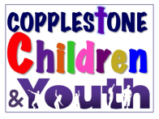

Children and Families Project
For more information about this project, please click here.
Crèche
When: Sundays 10:45am‐12:00pm
Children aged 0‒3 are able to spend this time in our fully staffed crèche provision.
Kidzone
When: Sundays 10:45am‐12:00pm
If you’re between the ages of 4 and 11, then KidZone is the place to be. With the rest of the Youth Church, we join the adults in the main Church for the first few minutes of the service, which is aimed towards the younger age group. We spend the rest of the time back in the Community hall where we have stories, games, songs, crafts, and sometimes sweets! It’s a great time to meet your friends and learn about the Bible in an exciting way!
Those from Years 2-6 also meet on the third Friday of each month for a social get together from 6:30-8:00pm.
Playzone
When: Monthly on Thursdays 9:00‐10:30am
This toddler group runs once a month alongside the Copplestone Café. Each month we offer different activities and experiences for your pre-primary aged children to enjoy, from crafts to free play and story sessions to the 'Mini World Experience'. It is a great environment for both children parents/carers to enjoy. There is no admission fee, only donations for coffee and cake (provided by Copplestone Café).